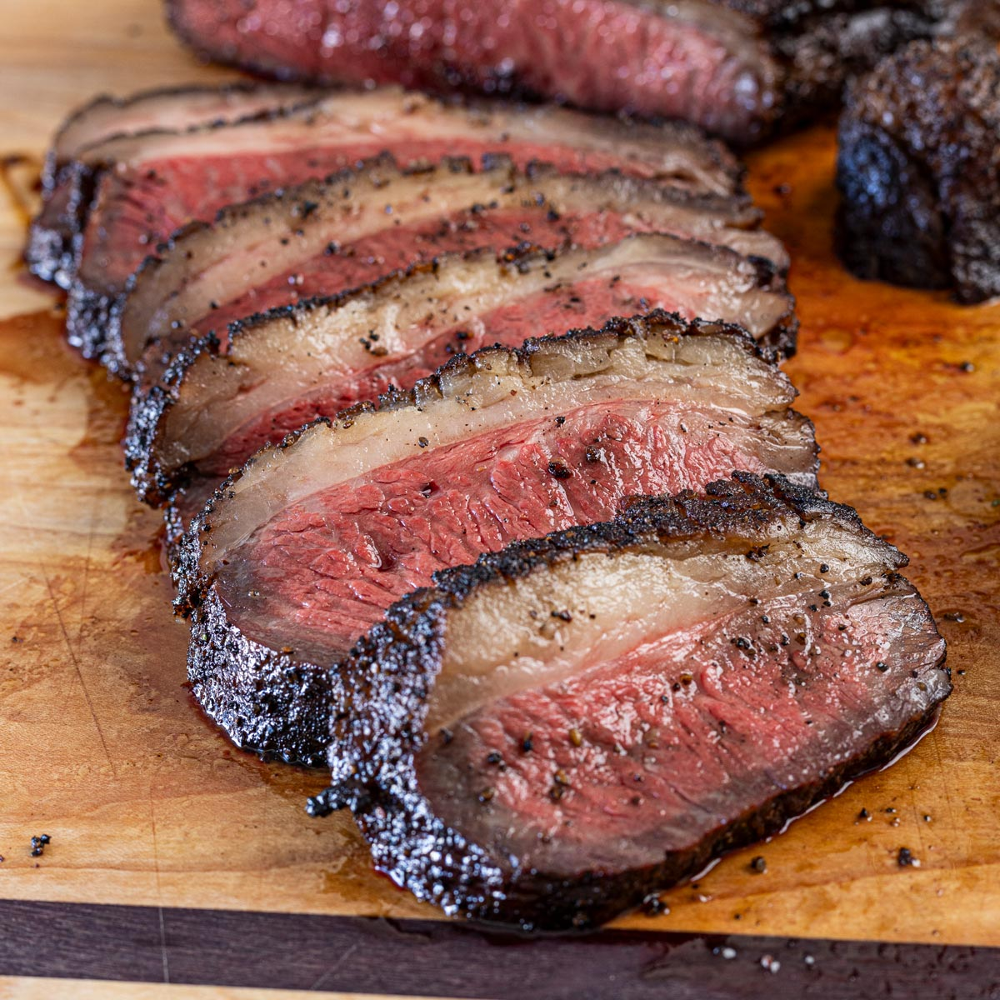

Picaña Medium Well Recipe

Medium Well Picaña
To make a medium-well picanha, start by selecting a high-quality cut with a thick fat cap. Pat the meat dry and season generously with coarse salt, black pepper, and optionally a touch of garlic powder. Preheat a grill or cast-iron skillet to medium-high heat. Place the picanha fat side down first to render the fat and create a crisp, flavorful crust—this usually takes about 5–7 minutes. Then sear the other sides until browned. Reduce the heat to medium and continue cooking, turning occasionally, until the internal temperature reaches about 150°F (65°C) for medium-well doneness. Let the meat rest for 5–10 minutes before slicing to retain its juices. Cut the picanha against the grain into thin slices and serve with chimichurri or your favorite sides for a tender, flavorful result.
List of Ingredients
- 1 whole picanha (top sirloin cap), about 2–3 pounds
- 2 tablespoons coarse salt (kosher or sea salt)
- 1 teaspoon freshly ground black pepper
- 1 teaspoon garlic powder (optional)
- 1 tablespoon olive oil or vegetable oil (for searing, if using a skillet)
- Chimichurri sauce or preferred dipping sauce (optional, for serving)
Steps for this delicous steak dish
- Prepare the meat: Pat the picanha dry with paper towels to remove excess moisture.
- Score the fat cap: Lightly score the fat in a crisscross pattern without cutting into the meat. This helps render the fat evenly.
- Season: Rub the entire picanha with olive oil, then season generously with coarse salt, black pepper, and garlic powder if desired.
- Preheat the grill or skillet: Heat your grill or cast-iron skillet to medium-high.
- Sear the fat side: Place the picanha fat side down first and cook for about 5–7 minutes until the fat becomes golden and crispy.
- Sear the other sides: Turn the picanha and sear each side for 3–4 minutes to develop a nice crust.
- Cook to temperature: Reduce the heat to medium and continue cooking, turning occasionally, until the internal temperature reaches 150°F (65°C) for medium-well doneness.
- Rest the meat: Remove the picanha from the heat and let it rest for 5–10 minutes to allow the juices to redistribute.
- Slice and serve: Cut the picanha against the grain into thin slices and serve warm with chimichurri or your favorite sides.
Home